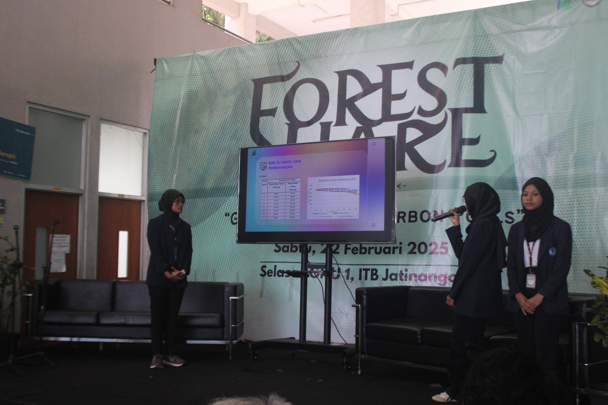
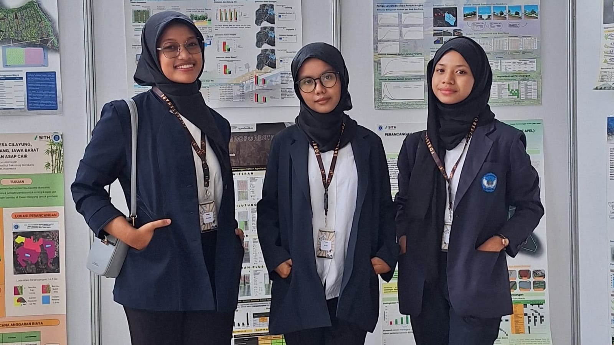
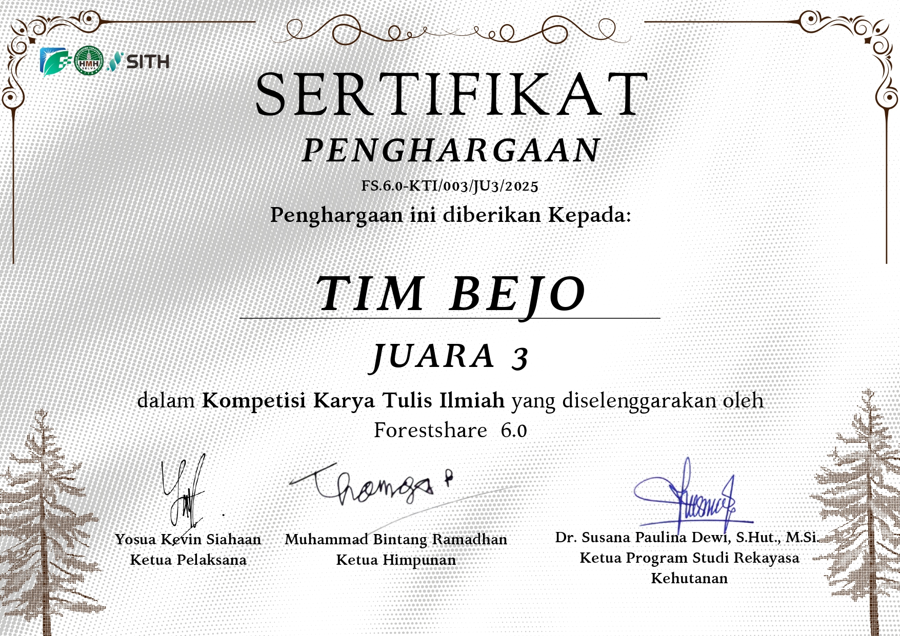
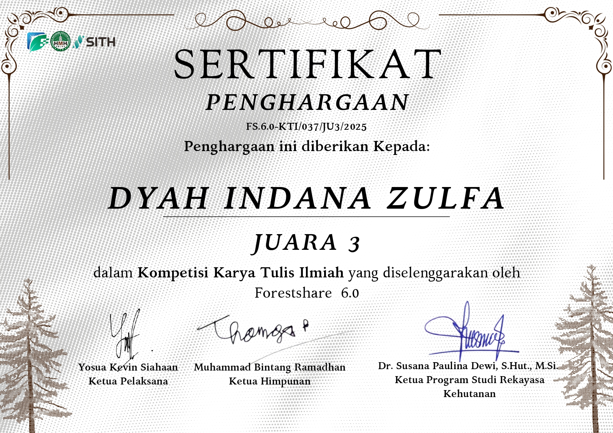

3rd Place – National Scientific Writing Competition
Forestshare 6.0 is an annual environmental initiative organized by students of Forest Engineering, Institut Teknologi Bandung (ITB). The event addresses Indonesia’s historical forestry challenges and promotes sustainable environmental perspectives under the grand theme: “Eco-friendly Lifestyle for Our Sustainable Environment.”
The Scientific Writing Competition (LKTI) carried the theme “Green Forest as Carbon Pools” with subthemes:
The competition was open nationally for SMP to university students without category separation. The timeline spanned from 17 December 2024 to 23 February 2025, culminating in offline final presentations at ITB Jatinangor.
I participated as a member of Tim BEJO (derived from the Javanese word “bejo”, meaning fortunate). Our team selected the subtheme “Forest as Carbon Pools.”
After submitting the abstract, our team was announced as one of the Top 5 Finalists and invited to present the full research at ITB Jatinangor.
Our research titled “POIRGA: IoT-Based Multifunctional Microalgae Liquid Tree for Air Pollution Mitigation” proposed an innovative microalgae-based system integrated with IoT sensors to function as a carbon absorption unit.
The prototype utilized Chlorella sp. as a CO₂ absorber and implemented MQ-135, DHT11, and LDR sensors connected to an Arduino-based monitoring system. Experimental results demonstrated an average CO₂ absorption efficiency of 8.25% under controlled conditions.
The research aligned directly with the “Forest as Carbon Pools” subtheme by presenting a scalable, technology-integrated carbon reduction model inspired by natural forest mechanisms.



